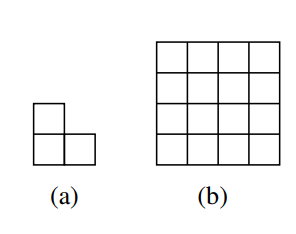

Considere um conjunto $S$ de números naturais definido
recursivamente da seguinte maneira:
$3\in
S$;
se $x\in S$ e $y\in S$ então $x+y\in S$.
Prove que $S$ é
o conjunto dos naturais múltiplos de 3.
Obs: $x$, $y$
acima não são necessariamente distintos. Os únicos elementos de $S$ são os obtidos pelas regras acima. Dica: Primeiro
prove que para todo natural $n$, vale $3n\in S$. Depois prove que
todo elemento de $S$ é múltiplo de 3.
Nota Para provar a igualdade de dois conjuntos $A=B$ provamos, em geral,
duas inclusões $A\subseteq B$ e $B\subseteq A$. Isso foi a dica dada acima.
Prove que para todo natural $n$, uma grade de quadrados $2^n\times
2^n$ (a Figura1(b) abaixo mostra uma grade $2^4\times 2^4$) com
qualquer um de seus quadrados removidos pode ser coberta por
ladrilhos de tamanho fixo em forma de L (conforme Figura
1(a)). Figura 1: